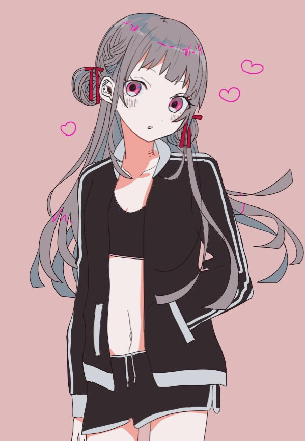
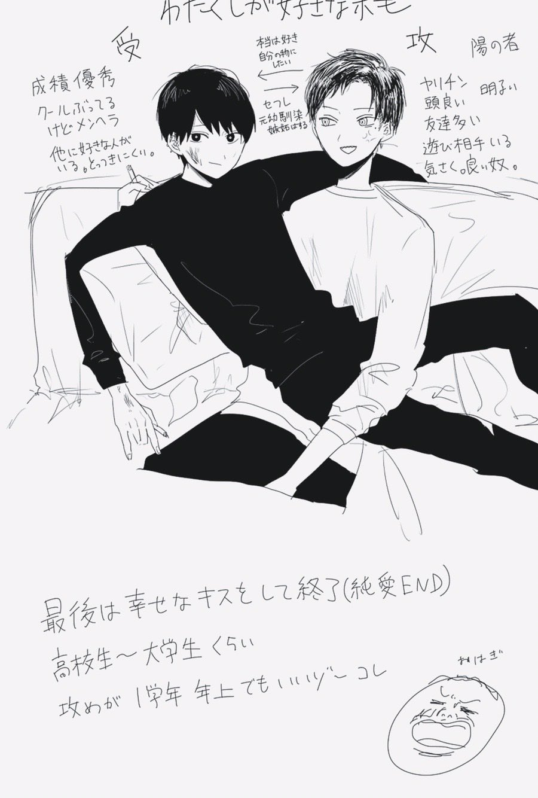
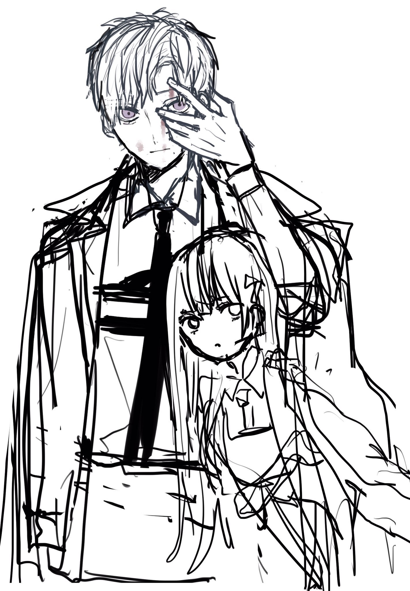
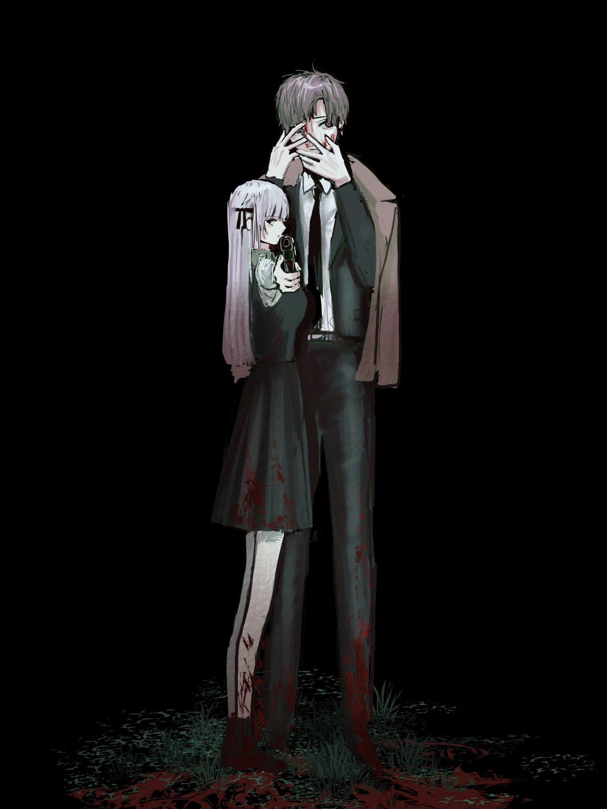

おにロリを描きたかった
※『アッシュ・ジャーニー』の制作についての記事と重複する部分もありますが、ご容赦ください。
「アッシュ・ジャーニー」は、「おにロリを描きたい！」という思いから生まれました。

最初に生まれたのはアスハ
最初に生まれたのはアスハです。
2018年頃、白咲に続いて「もう一度、自分好みの女の子を描きたい」と思い、前髪ぱっつん・銀髪・まんまるな瞳が特徴の女の子として誕生しました。
当時はツインのお団子ヘアで、現在とは少し異なるデザインでした。

その頃のアスハは、『八丸技研』という現代SF作品に登場するアンドロイドでした。
八丸技研でエンジニアとして働く椎野に恋をする女の子として、約7年にわたって描き続けていたキャラクターです。
次に生まれたのが宮薙
宮薙は、凪坂という男子高校生に振り回される大学生として誕生しました。

その後、『八丸技研』では椎野の先輩という立場になりました。
現在では椎野も『シークレット・ブラック』で警察官になり、『八丸技研』のキャラクターたちはそれぞれ別の作品へ旅立ってしまいました。
少しややこしいですが、それぞれ違う作品の中で新しい役割を見つけています。
二人が出会った瞬間
『サマーガール・ブルー』が一区切りついた頃、「この二人でおにロリを描いたら面白いんじゃないか」と思うようになりました。
そこで、ロリっぽい見た目のアスハと、唯一高校生ではなかった宮薙（当時は24歳）を組み合わせることに。
このタイミングでアスハの年齢も18歳から13歳へ変更しました。
実は、それ以前にも二人を一緒に描いたイラストはありました。
ただ、拳銃を持っていたり、不穏な雰囲気の作品が多く、「宮薙がアスハに振り回される」という今の関係性はまだありませんでした。


ここから少しずつ現在の「宮アス」が形になっていきます。
二人は少しずつ変わっていった
宮薙は陽気なお兄さんから、無口で落ち着いた青年へ。
アスハは、無邪気さだけではなく、危うさも抱えた少女へ。
描き続ける中で、二人の性格も少しずつ今の姿へ変わっていきました。
二人の関係
恋人でも、親子でも、兄妹でもない。
でも、お互いにとって唯一無二。
そんな距離感を描きたいと思っています。
世のおにロリ作品では恋愛関係になる二人も多いですが、宮薙とアスハは恋人にはなりません。
アスハのレズ設定はそのままに、宮薙も別作品ではBL作品のキャラクターでしたが、『アッシュ・ジャーニー』ではヘテロとして再構築しました。
周りから見れば兄妹のようで、本人たちはきっと否定する。
そんなバディを書き続けたいと思っています。
お気に入りのシーン
お気に入りなのは、アスハが宮薙を振り回すシーンです。
宮薙は呆れながらも放っておけず、結局付き合ってしまう。
そんな二人のやり取りは、おにロリ作品らしい魅力のひとつだと思っています。
名前の由来
・宮薙 千秋
宮薙という名前は、まず「宮」という字ありきで考えました。
「宮」という一文字はカップリング名にしたときの見栄えがよく、響きも気に入っていたため採用しています。
「薙」は、当時読んでいた漫画『あさひなぐ』からいただきました。
名前の「千秋」は、単純に響きが好きだったことが理由です。
・蠍 アスハ
アスハという名前は、日本の神様である阿須波神（あすはのかみ）からいただいています。
もともとアスハは『八丸技研』に登場するアンドロイドだったため、開発者である八丸技研が、日本神話に登場する神様の名前から名付けた、という設定になっています。
阿須波神は『古事記』において、大年神（おおとしのかみ）の子どもの一柱として登場する神様です。
苗字の「蠍」は、星座のさそり座が由来です。
ちなみに、『八丸技研』時代の苗字は柩時（ひつじ）でした。こちらも、おひつじ座から取っています。
キャラクターの名前は、響きだけでなく、その作品や世界観に自然に溶け込むことを意識して決めています。だからこそ、長い時間をかけて設定が変わっても、名前だけはずっと大切に残しているものもあります。
最後に
ここまで読んでくださり、ありがとうございました。
宮薙とアスハは、一度生まれて終わったキャラクターではありません。
別々の作品を経て、何度も設定や立場を変えながら、ようやく『アッシュ・ジャーニー』という居場所にたどり着きました。
だからこそ、この二人の旅は作者である私にとっても特別なものです。
これからも少しずつ成長していく二人を、温かく見守っていただけたら嬉しいです。